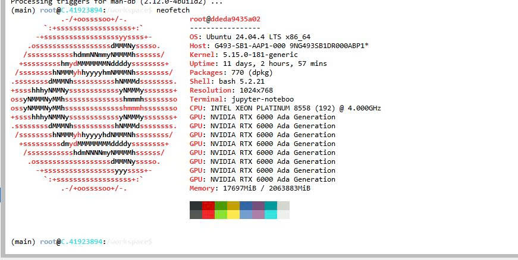
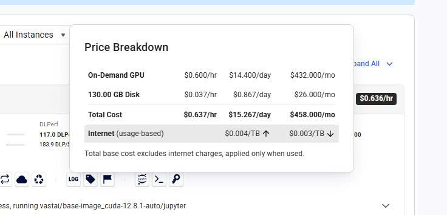

Báo Cáo Tiến Độ Lần 01
Benchmarking TurboQuant and KV Cache Compression Methods
on Vietnamese Large Language Models
on Vietnamese Large Language Models
Thực hiện: Data Team & Infrastructure
Ngày: Tháng 06/2026
Trạng thái tổng thể: Hoàn thành một phần (Ước lượng đạt 20% dự án).
Thực hiện bởi: Hồ Việt Anh (AndyAnh174)
Hạ tầng này đảm bảo sức mạnh vượt trội cho các thuật toán Quantization và xử lý pipeline NeMo.

Việc áp dụng hình thức Pay-as-you-go giúp nhóm chủ động kiểm soát chi phí trong các phiên thực nghiệm cường độ cao, tận dụng tối đa sức mạnh của RTX A6000 mà không gây lãng phí tài nguyên.

Nguyễn Hồ Phát (Phat.Nguyen):
docker-compose.yml với base image python:3.10-slim. Xác thực runtime thành công trên các môi trường.Chuyên dụng xử lý khối lượng lớn:
Điều hướng & logic nội bộ:
File test_set_small.json đã được tạo, sử dụng Tokenizer Qwen/Qwen2.5-7B-Instruct-1M trên nguồn chính VTSNLP.
| Nhóm Context | Số lượng mẫu | Min Tokens | Max Tokens | Avg Tokens |
|---|---|---|---|---|
| 4k | 4 | 5000 | 5000 | 5000.0 |
| 8k | 4 | 8099 | 9500 | 8731.5 |
| 16k | 4 | 14562 | 18500 | 17255.0 |
Cảm ơn thầy và các bạn đã lắng nghe báo cáo của nhóm.